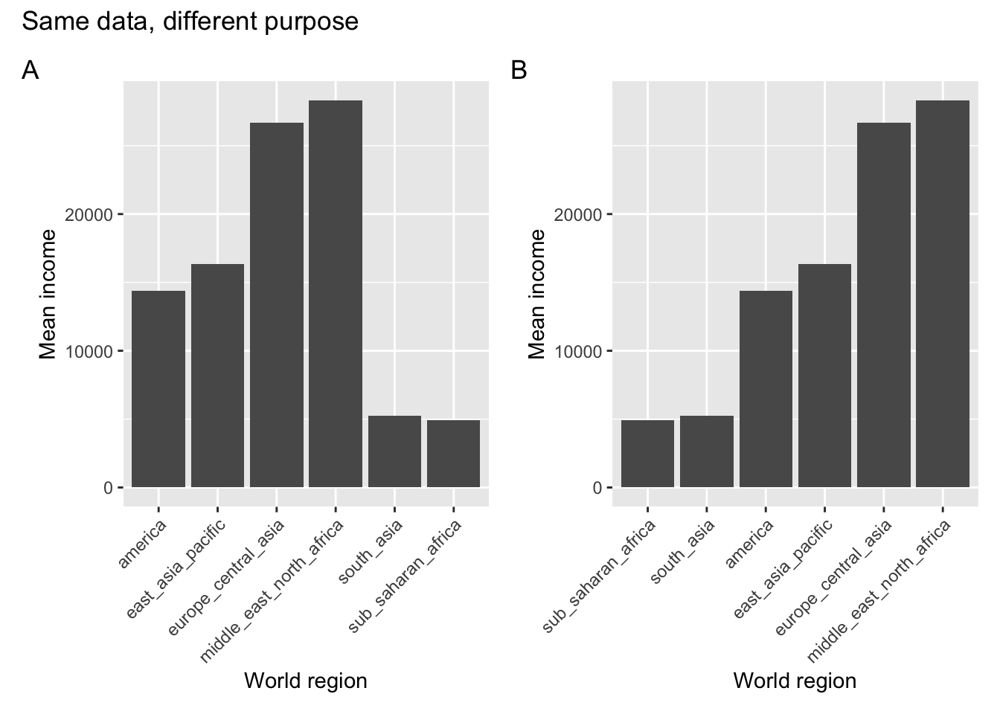
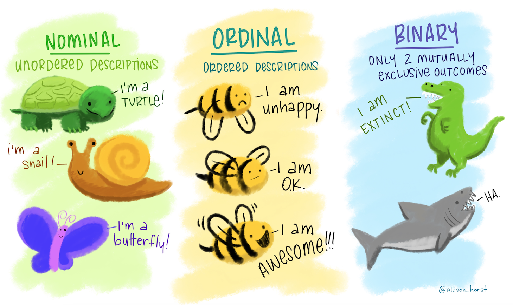
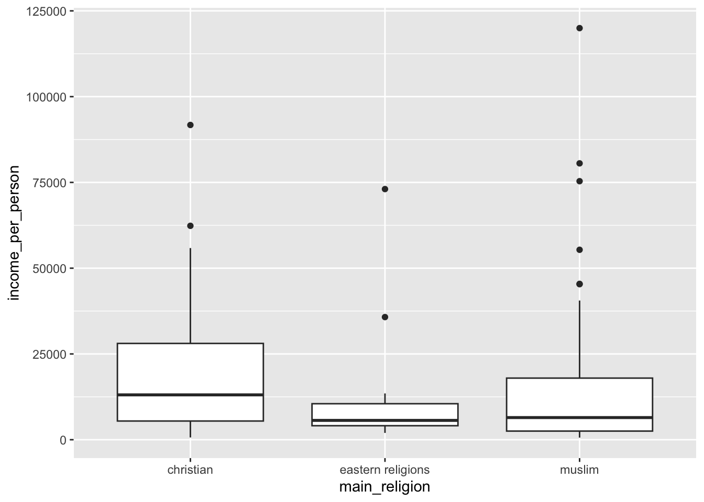
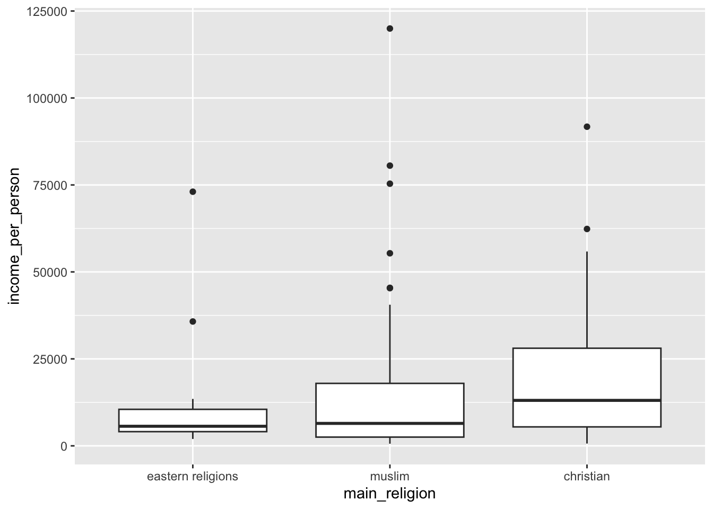
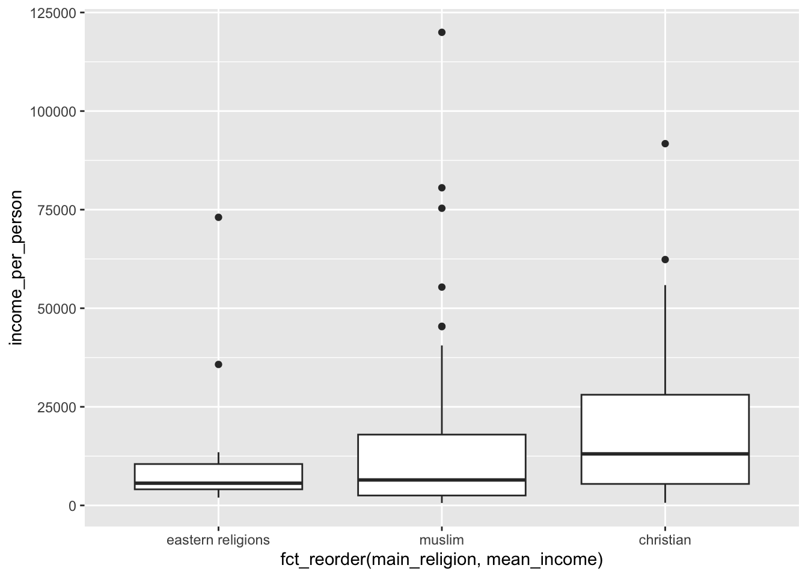
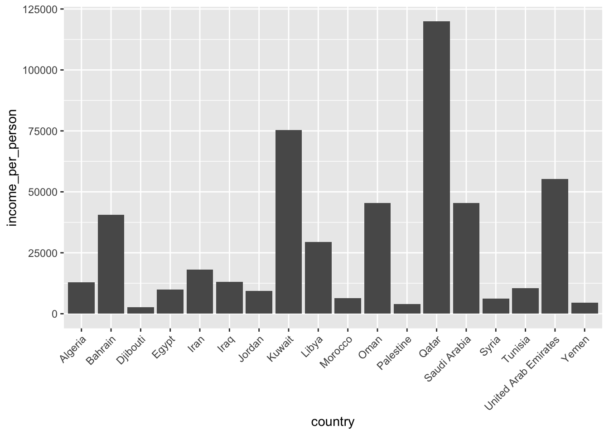
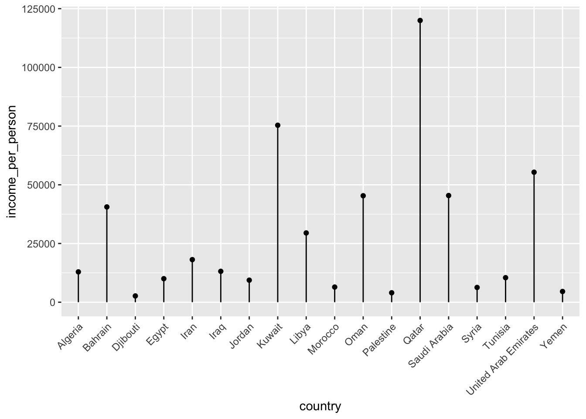

gapminder <- read_csv("data/gapminder_clean.csv")12 Rank and order
Learning outcomes
- Consider informational hierarchy
- Be able to rank and order data
- Understand how to use ordering in visualisations
12.1 Libraries and functions
Click to expand
12.1.1 Libraries
12.1.2 Functions
12.2 Purpose and aim
Hierarchy in data can often be translated to hierarchy of our graph. It allows us to change the narrative of our visualisation and give it structure. This often involves us ordering or ranking our data. We’ll practice some examples of that here.
12.3 Loading data
If you haven’t done so yet, please load the data as follows:
Using the gapminder data set, let’s look at the following example.

So what happened here? Both plots show the average income across the countries within each world region. In panel A the different regions are ordered alphabetically, whereas in panel B they are displayed or ranked by average income.
Same data, but a different purpose! When would we use one or the other?
If we simply wanted a look-up table, where we could easily find the average income for a specific world region, then we would want to use the representation in panel A. Let’s say we want to find the value for South Asia - we’d follow along the x-axis in alphabetical order. Doing the same in panel B is actually much harder.
If we’re interested in the world regions with particularly high average levels of income, then panel B would be more suitable. We’d simply look at the world regions that are displayed towards the right of the plot.
12.4 Reordering data
The process of reordering your data, depending on the purpose of your visualisation, can be a bit tricky.
To understand this a bit better it’s important to get our head round some different categorical data types, wonderfully illustrated by Allison Horst:

The type we are focusing on is the ordinal data. These are descriptions (so not numerical data) that have some kind of order.
This can be an inherent order, for example a range of emotions from good to bad. Using the illustration we’d expect the bee to feel awesome, ok and unhappy in that order.
It can also be an order that we are imposing ourselves. Again, using the illustration we can talk about turtle, snail and butterfly. These have no inherent order, but maybe we want to impose one, such as alphabetical order. If we’d do that, they would be arranged as butterfly, snail, turtle.
The way that programming languages deal with this kind of ordering is through factors. These are categorical data that have a fixed and known set of values.
Let’s illustrate this with the bee example. Assume we followed a certain bee for 5 hours and recorded it emotional state once per hour. We could, hypothetically of course, end up with the following observations:
ok, awesome, unhappy, ok, unhappy
The bee was clearly not having the best of days. But I digress.
If we wanted to code these states in R, then we would do the following:
bee <- c("ok", "awesome", "unhappy", "ok", "unhappy")
bee[1] "ok" "awesome" "unhappy" "ok" "unhappy"They appear in the order that I observed them. Now let’s say that I want to impose a certain order on them, maybe alphabetically. I could take my bee object and convert it to a factor.
bee_factor <- factor(bee)
bee_factor[1] ok awesome unhappy ok unhappy
Levels: awesome ok unhappyThe first line still gives me the 5 observations in their original order, but below it there are Levels: awesome ok unhappy.
What’s happened here is that R recognises that there are three distinct possible values in our data, awesome, ok and unhappy. And it’s ordered them alphabetically, which is the default.
If I’d want to change this order, I can specify the levels directly:
factor(bee_factor, levels = c("unhappy", "ok", "awesome"))[1] ok awesome unhappy ok unhappy
Levels: unhappy ok awesomeNow let’s see how we translate this to our data set. Let’s create box plots for income_per_person for each main religion. We’ll look at the default order, and then change it.
Income per person for each religion:
ggplot(data = gapminder,
aes(x = main_religion, y = income_per_person)) +
geom_boxplot()
This is in alphabetical order, by default.
Let’s say we wanted to change it. One of the ways we could do this is by making the main_religion column a factor and changing its order. Let’s say we wanted to arrange them in order of average income. We could find this out by calculating the average income for each religion:
gapminder %>%
group_by(main_religion) %>%
summarise(mean_income = mean(income_per_person)) %>%
arrange(mean_income) %>%
ungroup()# A tibble: 3 × 2
main_religion mean_income
<chr> <dbl>
1 eastern religions 14034.
2 muslim 16600.
3 christian 17721.We would then order the data as follows:
gapminder %>%
mutate(main_religion = factor(main_religion,
levels = c("eastern religions", "muslim", "christian"))) %>%
ggplot(aes(x = main_religion, y = income_per_person)) +
geom_boxplot()
This works, but you can imagine that if you have lots of groups then doing this by manually specifying the levels becomes very (very!) tedious.
Thankfully there is another way of doing exactly the same, without manual specifying the order. This uses the fct_reorder() function to… reorder the factor (what’s in the name?!).
The way that it works is that you give it the data you want to reorder, then tell it what to reorder by. In our case we want to reorder by the mean income for each religion, so we need to calculate that first. After that we reorder the data directly within ggplot():
gapminder %>%
# group by main religion
group_by(main_religion) %>%
# create a new column that contains the average
# income for that type of religion
mutate(mean_income = mean(income_per_person)) %>%
# remove the grouping
ungroup() %>%
# send the data to ggplot
# and fct_reorder the main_religion on the x-axis
# based on the calculated mean_income
ggplot(aes(x = fct_reorder(main_religion, mean_income),
y = income_per_person)) +
# create box plots
geom_boxplot()
12.5 Stem plots
The bar plot was useful when there weren’t too many observations. However, if we have lots of observations, then it can become a bit crowded. Have a look at the plot below, where we’re looking at the income per person for all the countries in the Middle East / North Africa region:
gapminder %>%
filter(world_region == "middle_east_north_africa") %>%
ggplot(aes(x = country, y = income_per_person)) +
geom_bar(stat = "identity") +
theme(axis.text.x = element_text(angle = 45, hjust=1))
Another way that we could display those data is by creating a stem plot (or lollipop plot).
gapminder %>%
filter(world_region == "middle_east_north_africa") %>%
ggplot(aes(x = country, y = income_per_person)) +
geom_point() +
geom_segment(aes(xend = country, yend = 0)) +
theme(axis.text.x = element_text(angle = 45, hjust=1))
This type of plot can be useful if you have lots of categories, since each category takes up a bit less space than a bar.
12.5.1 Exercises
Reordering data FIXME
Level:
Below is a chunk of code. In several places the code states <FIXME>. Try to make the necessary changes, so that you end up with a stem plot that displays the number of children per woman, for each country in Europe and Central Asia. Reorder the data by number of children per woman, from high to low.
Which country has the second highest number of children per woman?
gapminder %>%
filter(world_region == <FIXME>) %>%
ggplot(aes(x = fct_reorder(country,
<FIXME>(children_per_woman)),
y = children_per_woman)) +
geom_point() +
geom_segment(aes(xend = <FIXME>, yend = 0)) +
theme(axis.text.x = element_text(angle = 45, hjust=1)) +
labs(x = "Country",
y = "Children per woman")
Answer
gapminder %>%
filter(world_region == "europe_central_asia") %>%
ggplot(aes(x = fct_reorder(country,
desc(children_per_woman)),
y = children_per_woman)) +
geom_point() +
geom_segment(aes(xend = country, yend = 0)) +
theme(axis.text.x = element_text(angle = 45, hjust=1)) +
labs(x = "Country",
y = "Children per woman")
The country with the second highest number of children per woman is the Kyrgyz Republic (Kyrgyzstan).
12.6 Summary
Key points
- Ranking or ordering your data in a particular way can help tell a story
- Programming languages use factors to deal with categories that have an inherent order